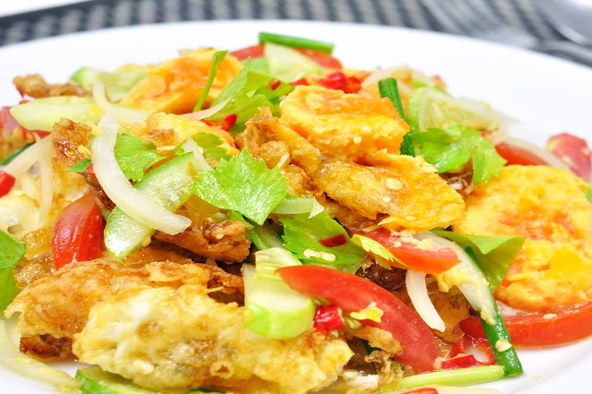

ยำไข่ดาว


- ไข่ไก่3 ฟอง
- น้ำมันทอดไข่1 ถ้วย
- หอมแดง3 หัว
- พริก5 ดอก
- มะนาว1/2 ลูก
- น้ำตาล4 ช้อนโต๊ะ
- น้ำร้อน (สำหรับละลายน้ำตาล) 4 ช้อนโต๊ะ
- น้ำปลา4 ช้อนโต๊ะ
- ต้นหอมผักชีอย่างละ 1 ต้น
ส่วนผสม
- นำไข่ลงไปทอดจนสุด แล้วพลิกให้อีกด้านสุก
- ตัดไข่เป็นชิ้นพอคำ และทำน้ำยำราดบนไข่ (ตามสัดส่วนด้านบน)
โดยนำน้ำตาลทรายกับน้ำร้อนละลายจนเป็นน้ำเชื่อมก่อน ใส่น้ำปลา มะนาว พริก และหอมแดงซอยคนให้เข้ากัน
แล้วราดลงบนไข่
*เคล็ดลับ: ไม่ใส่ชูรสนะคะ ใส่น้ำตาล น้ำปลามะนาว ตามนี้ก็อร่อยแล้วค่ะ - ซอยต้นหอมผักชี โรยหน้า คลุกให้เข้ากัน
- จัดแต่งจานยกเสืร์ฟ
วิธีทำ
เวลาเตรียมส่วนผสม: 5 นาที เวลาปรุงอาหาร: 10 นาทีขอบคุณข้อมูลสูตรอาหารนี้จาก